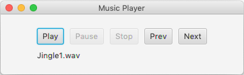
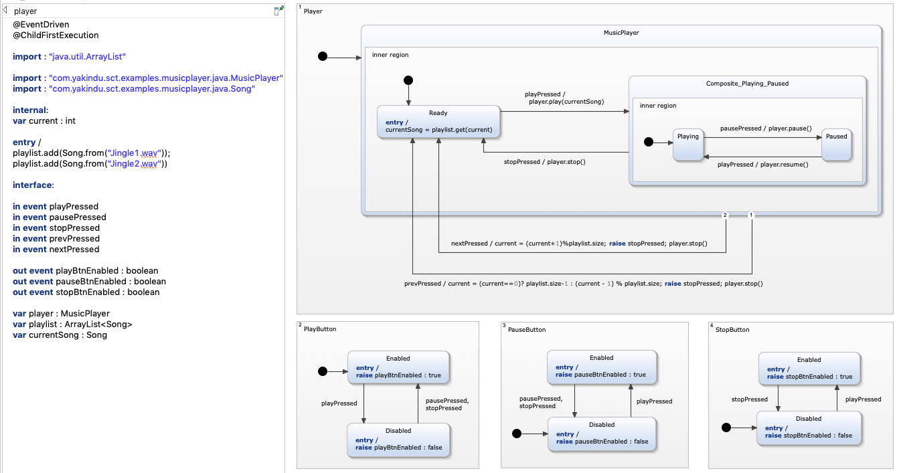

[Pro] Music Player (Java)

Photo by
Simone Acquaroli
Overview
This is a comprehensive example for the deep Java integration in YAKINDU Statechart Tools. The developed statechart controls a music player with a JavaFX based UI. The UI consists of 5 buttons: Play, Pause, Stop, Previous and Next. Clicking a button raises an event in the statechart which reacts accordingly by calling operations on the Java-based music player implementation. Additionally, the statechart controls which buttons are enabled in which context, e.g. the Play button gets disabled when a song is playing. 
This is an example for the deep Java integration demonstrating the following features:
- Importing arbitrary (manually written as well as system libraries) Java classes in the statechart
- Calling Java methods in the statechart
- Live invocation of Java methods during simulation
- Code generation for Java domain statecharts
Requirements
For this example to work, you need:
- Java 8 installed on your computer (JDK)
- YAKINDU Statechart Tools version 3.5.x
- The Java Domain feature installed:
- Open the installation wizard with 'Help -> Install New Software..'
- Use 'http://updates.yakindu.com/statecharts/labs' as update site
- Select 'YAKINDU Statechart Tools Java Domain' and click on Finish
- If you're using an open JDK, you need to install JavaFX. For Ubutuntu users: 'sudo apt-get install openjfx'
Run the built-in simulation
You can simulate the statechart without starting the JavaFX Application. This allows you to test the behavior of your system before using the generated code.
- Right-click on player.sct and choose 'Run As > Statechart Simulation'
- In the Simulation View on the right you can simulate button clicks by clicking on 'default > playPressed', for example
- As the simulation directly calls the used Java methods you should already here a sound when simulating the play button
Run the Music Player App
You can run the music player application like any other Java application. It uses the generated state machine code under the hood. Take a look into MusicPlayer.java to understand how the UI is linked with the statechart.
- Right-click on MusicPlayerApp.java and choose 'Run As > Java Application'
- The UI pops up and you can click on the buttons
- The music player behavior is completely backed by the generated statechart code